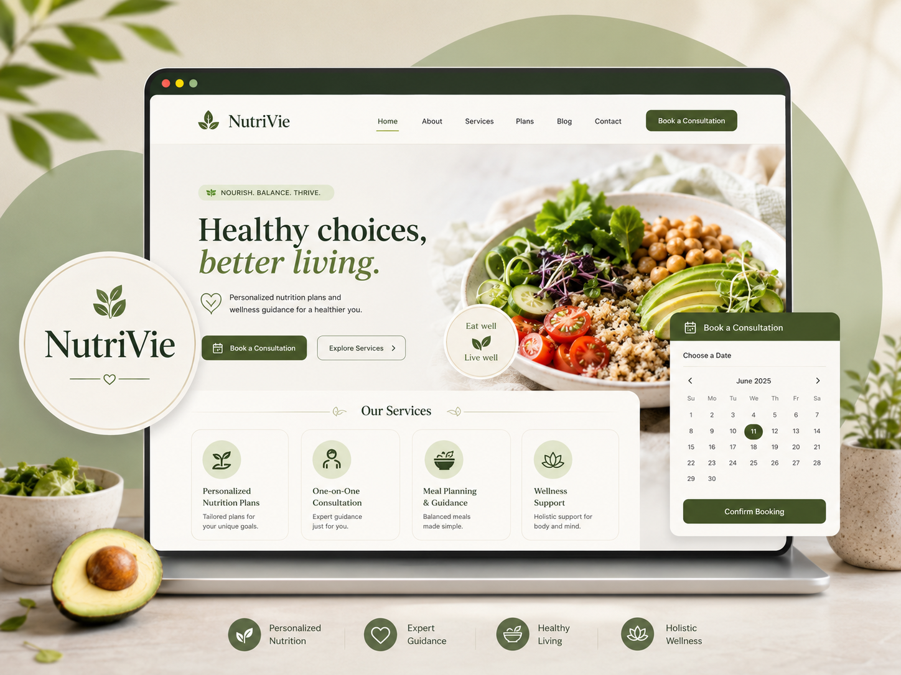

UX/UI · Service Design
NutriVie · Site de service NutriVie · Service website
Expérience bilingue et responsive avec comparaison des services, réservation interactive, validation de formulaire et confirmation en temps réel. Bilingual responsive experience with service comparison, interactive booking, form validation, and real-time confirmation.
Voir le site View website